Creates desirability functions for use in the optimization of multiple responses.
Usage
desirability(
response,
low,
high,
target = "max",
scale = c(1, 1),
importance = 1
)Arguments
- response
Name of the response.
- low
Lowest acceptable value for the response.
- high
Highest acceptable value for the response.
- target
Desired target value of the response.
targetcan be`max`,`min`, or any specific numeric value.- scale
Numeric value giving the scaling factors for one and two-sided transformations. Default is
c(1, 1).- importance
A value ranging from 0.1 to 10, used to calculate a weighted importance, i.e., with importances 1, 2, and 4, D = [(d1)^1, (d2)^2, (d3)^4]^(1/7). Default is `1`.
Value
This function returns a desirability.c object.
Details
For a product to be developed, different values of responses are desired, leading to multiple response optimization. Minimization, maximization, as well as a specific target value, are defined using desirability functions. A desirability function transforms the values of a response into [0,1], where 0 stands for a non-acceptable value of the response and 1 for values where higher/lower (depending on the direction of the optimization) values of the response have little merit. This function builds upon the desirability functions specified by Harrington (1965) and the modifications by Derringer and Suich (1980) and Derringer (1994). Castillo, Montgomery, and McCarville (1996) further extended these functions, but these extensions are not implemented in this version.
Examples
# Example 1: Maximization of a response
# Define a desirability for response y where higher values of y are better
# as long as the response is smaller than high
d = desirability(y, low = 6, high = 18, target = "max")
# Show and plot the desirability function
d
#> Target is to maximize y
#> lower Bound: 6
#> higher Bound: 18
#> Scale factor is: 1 1
#> importance: 1
#>
plot(d)

# Example 2: Minimization of a response including a scaling factor
# Define a desirability for response y where lower values of y are better
# as long as the response is higher than low
d = desirability(y, low = 6, high = 18, scale = c(2), target = "min")
# Show and plot the desirability function
d
#> Target is to minimize y
#> lower Bound: 6
#> higher Bound: 18
#> Scale factor is: 2
#> importance: 1
#>
plot(d)

# Example 3: Specific target of a response is best including a scaling factor
# Define a desirability for response y where desired value is at 8 and
# values lower than 6 as well as values higher than 18 are not acceptable
d = desirability(y, low = 6, high = 18, scale = c(0.5, 2), target = 12)
# Show and plot the desirability function
d
#> Target is 12 for y
#> lower Bound: 6
#> higher Bound: 18
#> Scale factor is: low = 0.5 and high = 2
#> importance: 1
#>
plot(d)
 # Example 4:
y1 <- c(102, 120, 117, 198, 103, 132, 132, 139, 102, 154, 96, 163, 116, 153,
133, 133, 140, 142, 145, 142)
y2 <- c(470, 410, 570, 240, 640, 270, 410, 380, 590, 260, 520, 380, 520, 290,
380, 380, 430, 430, 390, 390)
d1 <- desirability(y1, 120, 170, scale = c(1, 1), target = "max")
d3 <- desirability(y2, 400, 600, target = 500)
d1
#> Target is to maximize y1
#> lower Bound: 120
#> higher Bound: 170
#> Scale factor is: 1 1
#> importance: 1
#>
plot(d1)

d3
#> Target is 500 for y2
#> lower Bound: 400
#> higher Bound: 600
#> Scale factor is: low = 1 and high = 1
#> importance: 1
#>
plot(d3)

# Example 4:
y1 <- c(102, 120, 117, 198, 103, 132, 132, 139, 102, 154, 96, 163, 116, 153,
133, 133, 140, 142, 145, 142)
y2 <- c(470, 410, 570, 240, 640, 270, 410, 380, 590, 260, 520, 380, 520, 290,
380, 380, 430, 430, 390, 390)
d1 <- desirability(y1, 120, 170, scale = c(1, 1), target = "max")
d3 <- desirability(y2, 400, 600, target = 500)
d1
#> Target is to maximize y1
#> lower Bound: 120
#> higher Bound: 170
#> Scale factor is: 1 1
#> importance: 1
#>
plot(d1)

d3
#> Target is 500 for y2
#> lower Bound: 400
#> higher Bound: 600
#> Scale factor is: low = 1 and high = 1
#> importance: 1
#>
plot(d3)
